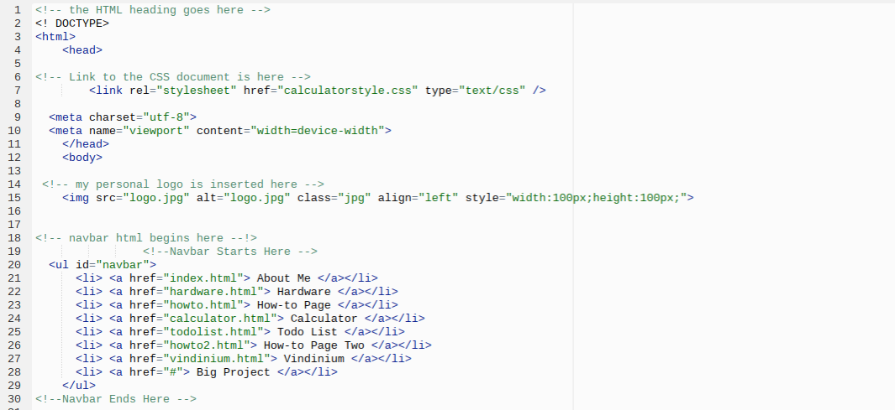
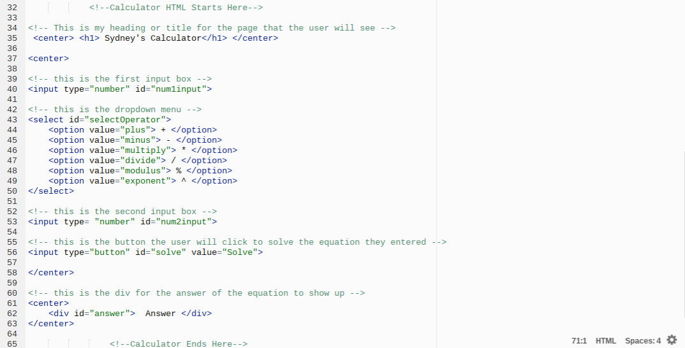
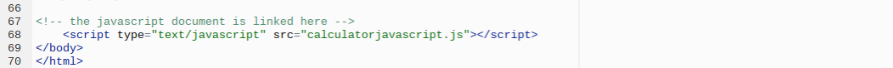
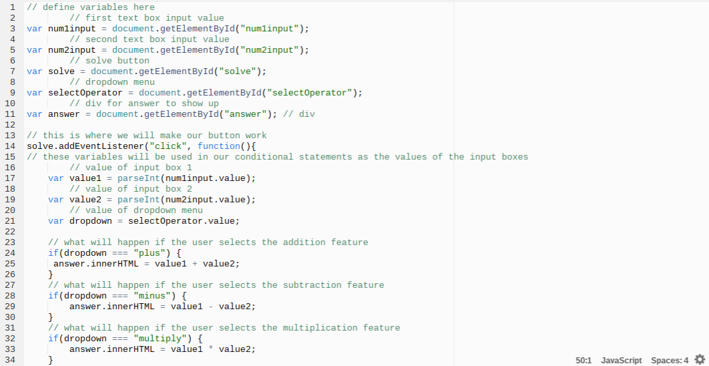
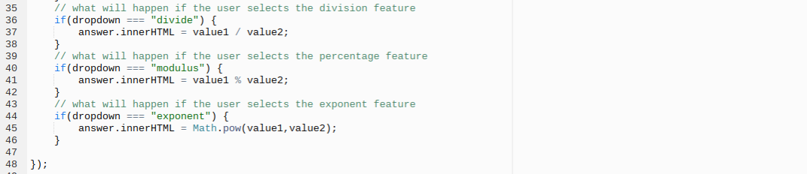
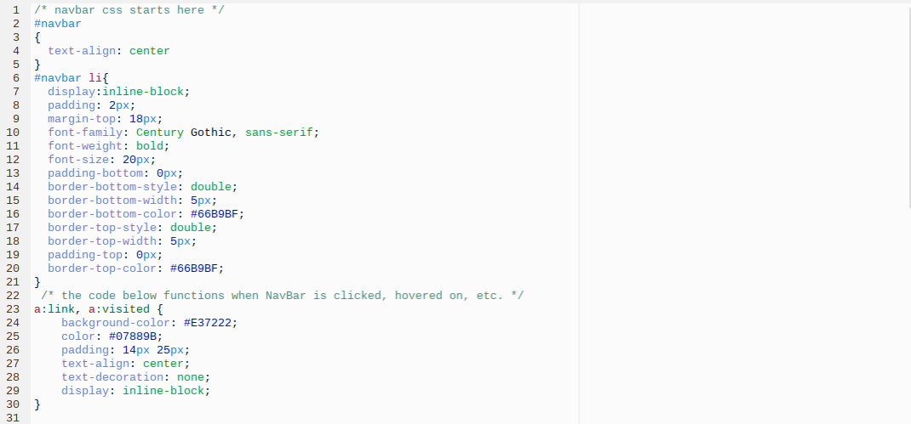
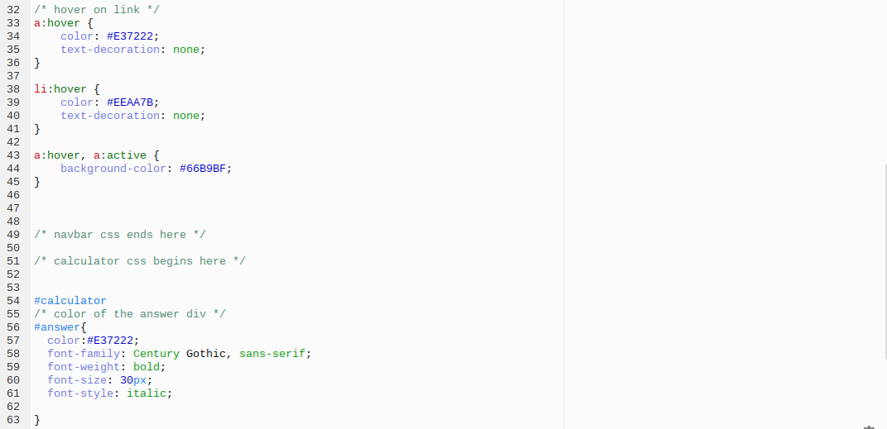
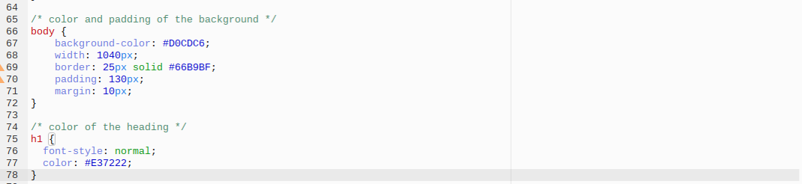
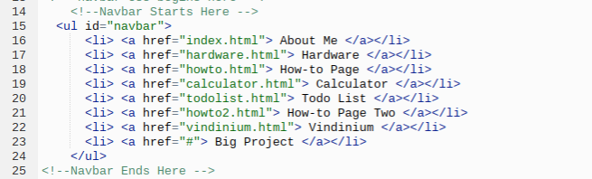
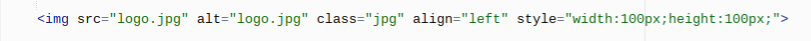

How-To Make a Calculator
Using HTML, Javascript, and CSS
What can my Calculator do?
My calculator can add, subtract, multiply, divide, calculate exponents and percentages based on the two values entered and the chosen operation.
How can you make this calculator?
This calculator was created in three sections: HTML, then Javascript, then CSS. Below the instructions for each section is an image of my full code with comments that indicate which step was completed.
HTML
- Set up HTML document in proper HTML format.
- Link your CSS document to HTML document.
- Create a heading that will help the user identify your page. I used the <h1> and <center> tags to add the phrase "Sydney's Calculator".
- Insert the input text box. This can be done using the <input> tag. Within the tag, identify the type of input and create an ID for the input box. The input will be a number and your ID can be anything you want. You will use this ID in the Javascript Section.
- Insert a dropdown menu for your different operations using the <select> tag. Within this tag, create an ID as you did in the step above. Using the <option> tag, create an option for each operation.
- Identify option values in list form. Make sure you do not have more than one operation per option. This list determines the order the user will view the operations in, from top to bottom.
- Insert Second Input text box. Use the same method as the first input box, using the <input> tag. Like the first box, the value of the input will be numbers. Be sure to not make the ID of the second box identical to that of the first.
- Create the "Solve" button that will be clicked when the user has inputted the desired information. Using the same <input> tag, create a unique ID for the button that has not been used previously. The value of the button will be "solve".
- Use the <div> tag to create a div for your button. Create a unique ID for the div within the tag.
- Link your javascript to your HTML document using the script tag. The type is "javascript" and the source is the name of your Javascript Document.
- Be sure to proofread your code, making sure all tags are closed and there are not two different values with the same ID name.



Javascript
- Define all variables using the getElementById method. The format should read: var name = getElementById(HTML ID Name). Do this for all HTML buttons and text boxes that have an ID.
- Use the addEventListener method to activate the Solve button.
- Create a new variable for each text box. Because we do not know exactly what the user will input, it is a variable. using the parseInt
- Create a variable for the dropdown menu.
- Create if-statements for each of the potential dropdown menu options. The format for an if-statement is seen in the image on the left below. The condition determines which dropdown option will be used. The codeblock determines what to do if this option is selected. The format of the codeblock is: div id .innerhtml = value 1 operation value 2. Complete this process for all dropdown menu options.
- Your calculator should now be functioning.


CSS
Your new calculator page can be styled in any way you like. The image below displays the CSS I used to add color to my page and Navigation Bar. I used unique colors, first finding the perfect shade in Adobe Kuler. I then used the number ID provided by this service to identify my color in the CSS document. My Navigation Bar has special colors that are displayed when it is clicked on, hovered over, and at rest.



Optional Steps
-
If you have a Navigation Bar, you can insert it above the "Create Heading" step in the HTML Section. The image below shows the HTML that created my Navigation Bar.

-
To the left of my Navigation Bar, I have my personal website logo. It can be inserted using the <img> tag. The image below shows the exact code I used to display my image.
